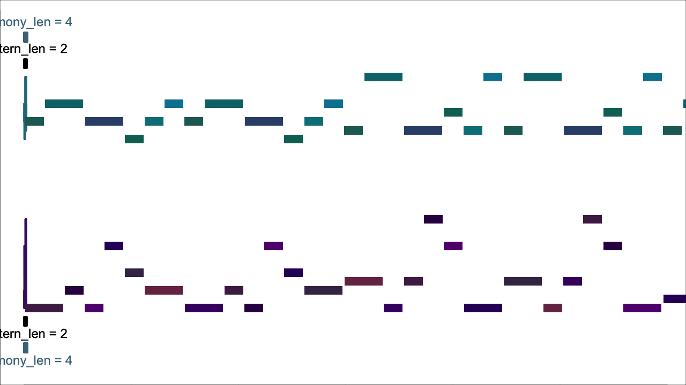
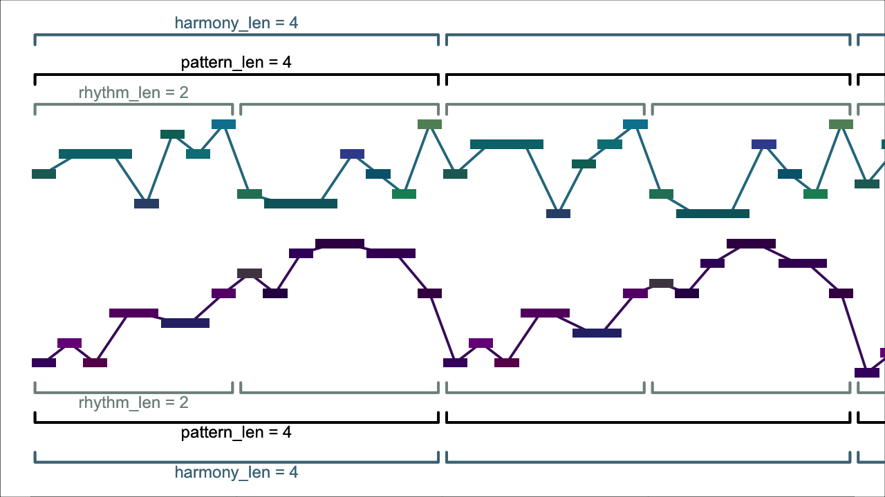
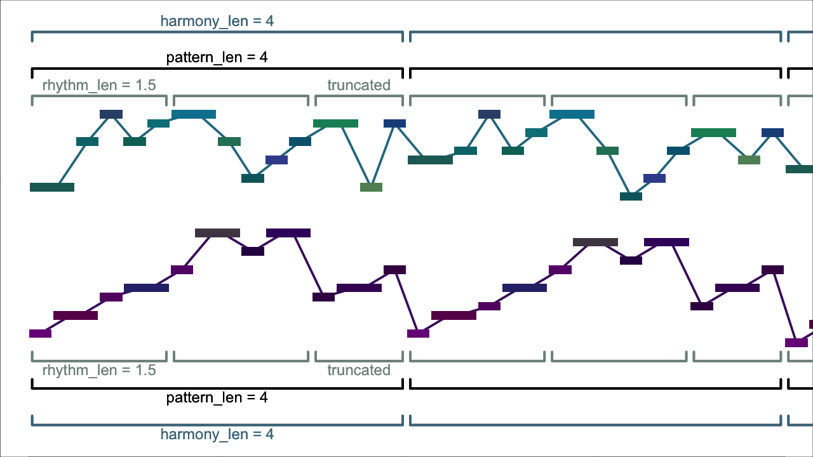
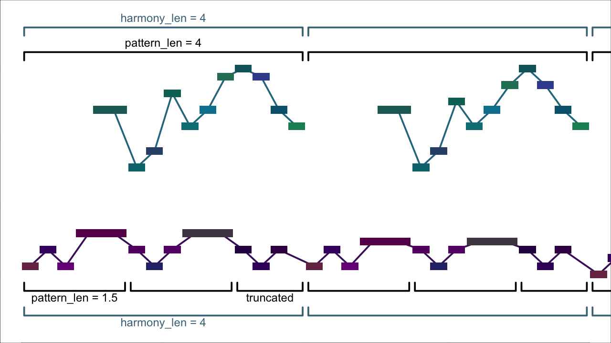
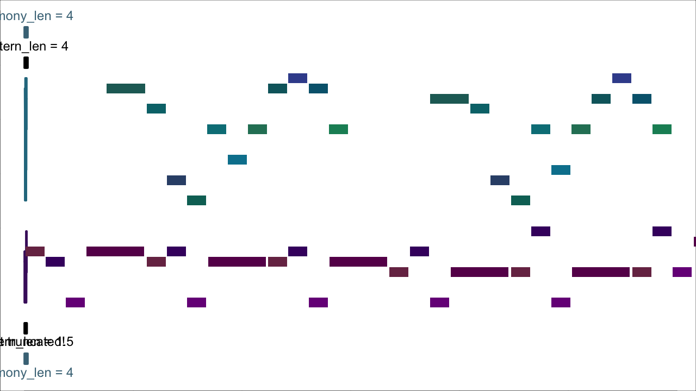
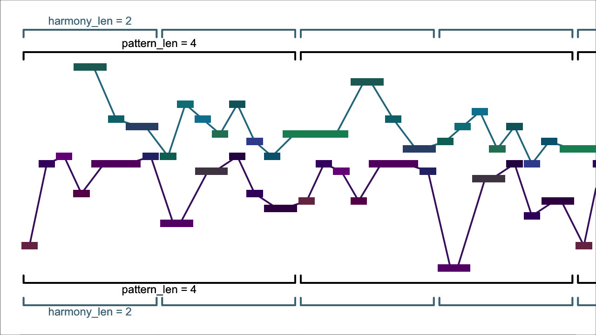

This script is a tool for musical composition. Here are a few examples of things I have made using it:
The gist of how it works goes as follows:
After it’s finished, you can listen to the results as a midi file. The script also provides a few tools (see Filters and Transformers) for reshaping the results.
To quickly try the script out, you can run:
python3 efficient_rhythms.py --settings examples/example1.py
You can also try running it with randomized settings, although be prepared for strange results:
python3 efficient_rhythms.py --random
The script provides very many settings that allow you to control the results. Full documentation is available in settings.html. But a gentler introduction is provided in the next section.
The basic settings that control the script are
rhythm_len: the length of the basic rhythmpattern_len: the length of the initial patternharmony_len: the length of each harmony (i.e., chord)For example, in example 1, the initial pattern is two beats long—i.e., pattern_len = 2. Each harmony, however, is four beats (harmony_len = 4). Thus you can see that the pattern repeats twice on each harmony, and is then adjusted to fit the next harmony.

Note that in example 1, we didn’t specify rhythm_len at all. We didn’t have to, because whenever rhythm_len is not set explicitly, it is implicitly assigned the value of pattern_len. In example 2, in contrast, rhythm_len = 2 but pattern_len = 4. Thus, if you look and/or listen carefully, you’ll find that the same rhythm repeats twice on each harmony, but with different notes each time—the entire pattern of pitches takes four beats to repeat, and by the time it does, its pitches are somewhat different, having been adjusted to the new harmony.1

We aren’t constrained, however, to have pattern_len be a whole multiple of rhythm_len. In example 3, pattern_len is still 4, but rhythm_len = 1.5, so now every third time the rhythm occurs, it is truncated (a bit like a 3–3–2 tresillo pattern).

Up until now, we’ve always specified the same settings in both voices. But we need not do so! In the next example, the bottom voice again has rhythm_len = 1.5, but the top voice now has rhythm_len = 2.
We can also have different values of pattern_len in each voice, as in example 5. However, if we do so, the script has to work quite a bit harder to find a solution.2 To help it do so, I made its task a little easier by changing consonance_treatment from "all_attacks" to "none". (Thus whereas in the previous examples, the simultaneously attacked notes all formed intervals like 3rds and fifths, in example 5, there are also dissonances like 7ths and 9ths.)

Up until now, whenever one pattern or rhythm didn’t line up with the other, we have truncated the shorter one, so that their next repetitions began together. But the script doesn’t require us to do so. In example 6, I have changed truncate_patterns to False. Thus, the 1.5-beat pattern in the lower part is no longer truncated after 4 beats. Instead, it is displaced relative to both the 4-beat upper pattern, as well as the 4-beat harmony changes. (The two patterns finally come into sync after 12 beats, the least-common-multiple of 1.5 and 4.)

Another feature of all the examples up until now is that harmony_len has always been at least as long as pattern_len. But this doesn’t have to be the case either! In example 7, I’ve set harmony_len = 2 but pattern_len = 4 so that each pattern covers two harmonies.

So far, we’ve looked at how to adjust the lengths of patterns, rhythms and harmonies. Now we’ll look at how to specify chords and scales to create harmonic progressions.
The most straightforward way is to specify all chords and scales explicitly. As a first example, I’ve specified one of the most (over?-)used chord progressions in pop music, the I-V-vi-IV progression, in C major. The results are in example 8. The relevant lines in harmony_example1.py are
"foot_pcs": ("C", "G", "A", "F"),
"chords": ("MAJOR_TRIAD", "MAJOR_TRIAD", "MINOR_TRIAD", "MAJOR_TRIAD"),
"scales": ("MAJOR_SCALE", "MIXOLYDIAN", "AEOLIAN", "LYDIAN"),There’s a lot to explain here:
"C" and "MAJOR_TRIAD" name constants that are defined in src\er_constants.py. If you know any music theory, the meaning of the constants above shouldn’t require any further explanation now. 
We can put the progression into another key by changing foot_pcs. For instance, this is what it would look like in E major:
"foot_pcs": ("E", "B", "C#", "A"),
"chords": ("MAJOR_TRIAD", "MAJOR_TRIAD", "MINOR_TRIAD", "MAJOR_TRIAD"),
"scales": ("MAJOR_SCALE", "MIXOLYDIAN", "AEOLIAN", "LYDIAN"),There are no constaints on foot_pcs, so we can always get a different progression by changing foot_pcs arbitrarily. For example, here I’ve changed the middle two members of foot_pcs to create a more chromatic progression:
"foot_pcs": ("E", "G", "C", "A"), # was ("E", "B", "C#", "A")
"chords": ("MAJOR_TRIAD", "MAJOR_TRIAD", "MINOR_TRIAD", "MAJOR_TRIAD"),
"scales": ("MAJOR_SCALE", "MIXOLYDIAN", "AEOLIAN", "LYDIAN"),
There are, however, two major constraints on chords and scales.
chords must have the same number of pitch-classes, and each item of scales must as well. This means, for example, you can’t go from a major triad to a seventh chord, or from a major scale to a whole-tone scale. (You can, however, use scales or chords with any number of pitch-classes you like—as long as that number is the same.) There is a technical reason for this constraint, (namely, that the script works by finding bijective voice-leadings between chords and scales), but in the longterm, I would very much like to remove it."MAJOR_TRIAD" will work with "MAJOR_SCALE", "MIXOLYDIAN", or any other scale that contains a major triad beginning on its first pitch"MAJOR_TRIAD" will not work with "AEOLIAN", "DORIAN", etc., because these scales contain a minor triad beginning on their first pitchBoth chords and scales will be looped through if they are shorter than foot_pcs. For example, the following short loop:
"foot_pcs": ("E", "G"),
"chords": ("MAJOR_TRIAD",), # the trailing commas before the parentheses
"scales": ("MIXOLYDIAN",), # are necessary!chords and scales do not have to be the same length, e.g.,
"foot_pcs": ("E", "G", "E", "C"),
"chords": ("MAJOR_TRIAD",),
"scales": ("MIXOLYDIAN", "LYDIAN"),So far, the length of the progression has always been taken implicitly from the length of foot_pcs. But it is also possible to set the length of the progression explicitly, using num_harmonies. This allows us to create “pedal points” on a repeated bass note:
"num_harmonies": 4,
"foot_pcs": ("D",),
# This example also illustrates a strategy for simulating mixing seventh
# chords with triads, using incomplete seventh chords.
"chords": ("MAJOR_7TH_NO5", "DOMINANT_7TH_NO3", "MAJOR_64", "MAJOR_63"),
"scales": ("MAJOR_SCALE", "MIXOLYDIAN", "DORIAN", "AEOLIAN"),Another useful setting for creating harmonic progressions is interval_cycle. If we pass interval_cycle to the script, then any values of foot_pcs beyond the first are ignored. Instead, the progression of foot_pcs is created by repeatedly progressing upwards by interval_cycle. For example,
"num_harmonies": 4,
"interval_cycle": "PERFECT_4TH",
"foot_pcs": ("Eb",),
# The preceding three lines are equivalent to:
# `"foot_pcs": ("Eb", "Ab", "Db", "Gb")`
"chords": ("MAJOR_TRIAD",),
"scales": ("MAJOR_SCALE",),interval_cycle can also consist of more than one interval:
"num_harmonies": 4,
"interval_cycle": ("PERFECT_4TH", "MINOR_6TH"),
"foot_pcs": ("Eb",),
# The preceding three lines are equivalent to:
# `"foot_pcs": ("Eb", "Ab", "E", "A")`
"chords": ("MAJOR_TRIAD",),
"scales": ("MAJOR_SCALE",),(Note that, since the intervals in interval_cycle are always understood upwards, "MINOR_6TH" in the preceding example is equivalent to a descending major third.)
If you’re interested in exploring the script further, some next steps could be:
examples/--randomsettings.htmlTODO!
If the script is invoked with the “–random” or “-r” flag, then many settings will be randomly varied. The randomized settings will then be printed out so you can inspect them.
The parameters of the randomization (i.e., the possible values that each setting can receive and their respective probabilities) are hard-coded into the script. A longterm to-do is to allow the user to specify the parameters of randomization in the same way that other settings are specified. There is, however, a setting available to exclude specific settings from randomization: exclude_from_randomization.
These are the settings that by default are randomized:
num_voices
pattern_len
rhythm_len
pitch_loop
harmony_len
truncate_patterns
voice_order_str
interval_cycle
chords
parallel_voice_leading
voice_lead_chord_tones
preserve_foot_in_bass
chord_tone_and_foot_disable
chord_tone_selection
force_chord_tone
chord_tones_sync_attack_in_all_voices
force_foot_in_bass
prefer_small_melodic_intervals
force_repeated_notes
force_parallel_motion
consonance_treatment
cont_rhythms
vary_rhythm_consistently
rhythmic_unison
rhythmic_quasi_unison
hocketing
attack_density
dur_density
attack_subdivision
randomly_distribute_between_choirs
length_choir_segments
tempoThese are the settings that are not randomized (although note that it is possible to specify that some of these settings, such as foot_pcs, be individually randomized):
tet
num_reps_super_pattern
existing_voices
existing_voices_offset
bass_in_existing_voice
existing_voices_repeat
existing_voices_transpose
existing_voices_erase_choirs
existing_voices_max_denominator
num_harmonies
hard_pitch_loop
time_sig
max_super_pattern_len
voice_ranges
allow_voice_crossings
scales_and_chords_specified_in_midi
foot_pcs
scales
voices_separate_tracks
choirs_separate_tracks
choirs_separate_channels
write_program_changes
humanize
humanize_attack
humanize_dur
humanize_velocity
humanize_tuning
logic_type_pitch_bend
num_channels_pitch_bend_loop
pitch_bend_time_prop
integers_in_12_tet
parallel_direction
extend_bass_range_for_foots
constrain_voice_leading_to_ranges
allow_flexible_voice_leading
vl_maintain_consonance
vl_maintain_limit_intervals
vl_maintain_forbidden_intervals
chord_tone_prob_func
max_n_between_chord_tones
min_prob_chord_tone
try_to_force_non_chord_tones
len_to_force_chord_tone
scale_chord_tone_prob_by_dur
scale_chord_tone_neutral_dur
scale_short_chord_tones_down
chord_tone_before_rests
chord_tones_no_diss_treatment
prefer_small_melodic_intervals_coefficient
unison_weighted_as
max_interval
max_interval_for_non_chord_tones
min_interval
min_interval_for_non_chord_tones
max_repeated_notes
max_alternations
prohibit_parallels
antiparallels
consonance_type
consonance_modulo
min_dur_for_cons_treatment
forbidden_interval_classes
forbidden_interval_modulo
exclude_augmented_triad
consonances
invert_consonances
consonant_chords
chord_octave_equi_type
chord_permit_doublings
rhythmic_quasi_unison_constrain
num_cont_rhythm_vars
cont_var_increment
super_pattern_reps_cont_var
rhythms_specified_in_midi
rhythms_in_midi_reverse_voices
sub_subdivisions
dur_subdivision
min_dur
obligatory_attacks
obligatory_attacks_modulo
comma_position
overlap
choirs
choir_assignments
length_choir_loop
choir_segments_dovetail
max_consec_seg_from_same_choir
all_voices_from_different_choirs
each_choir_combination_only_once
transpose
transpose_type
transpose_len
transpose_intervals
cumulative_max_transpose_interval
transpose_before_repeat
tempo_len
tempo_bounds
initial_pattern_attempts
voice_leading_attempts
ask_for_more_attempts
max_available_pitch_materials_deadends
exclude_from_randomizationA list of “permissive” settings.
If the script is failing with your supplied settings, consider applying some of the following settings to increase the size of the search space:
constrain_voice_leading_to_ranges = False
allow_flexible_voice_leading = True
vl_maintain_consonance = False
vl_maintain_limit_intervals = False
vl_maintain_forbidden_intervals = FalseTODO
The music-theoretically fastidious among you may have observed that these examples contain plentiful parallel fifths (for example, the first two sixteenth-notes in example 2). If desired, this could be avoided by including 7 in the argument prohibit_parallels.↩︎
If the algorithm were a little smarter, it wouldn’t have to work nearly so hard to cope with voices of different pattern_len. So this is a longterm to-do.↩︎